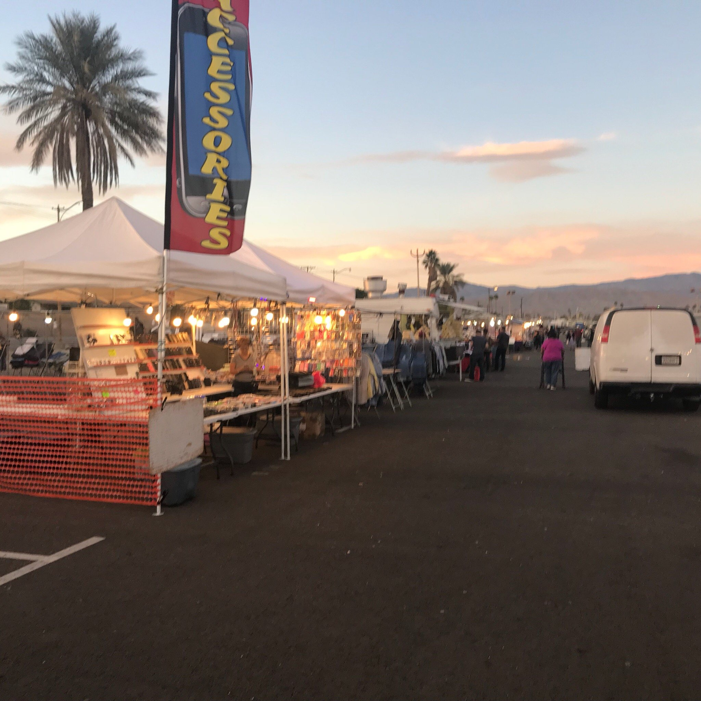
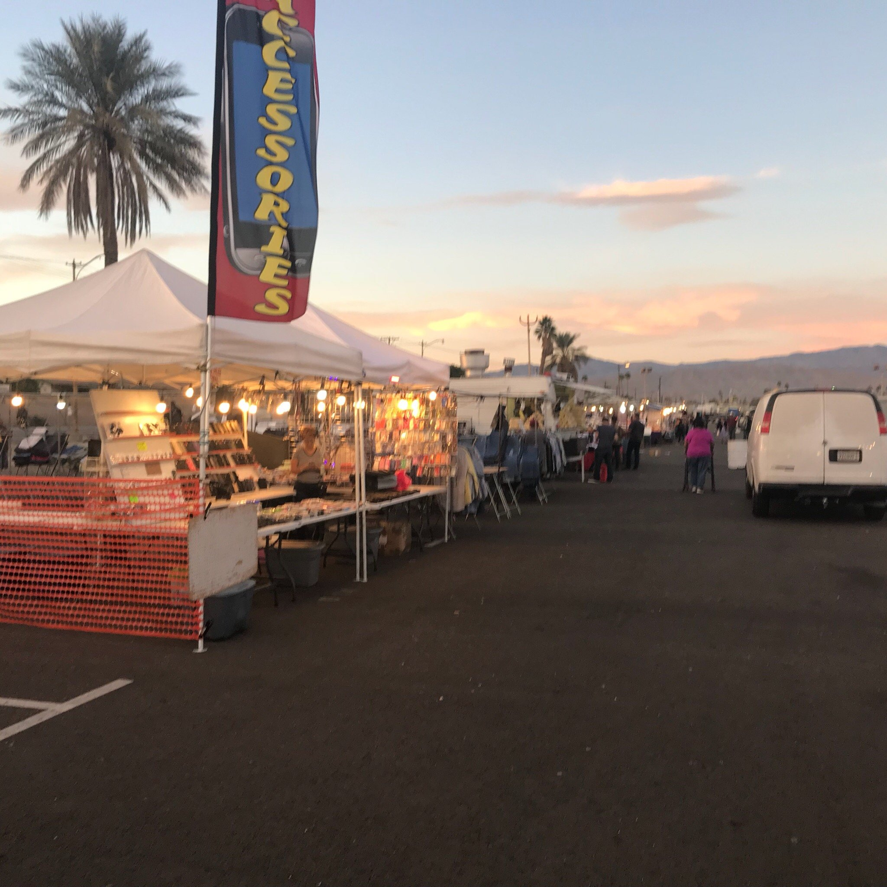
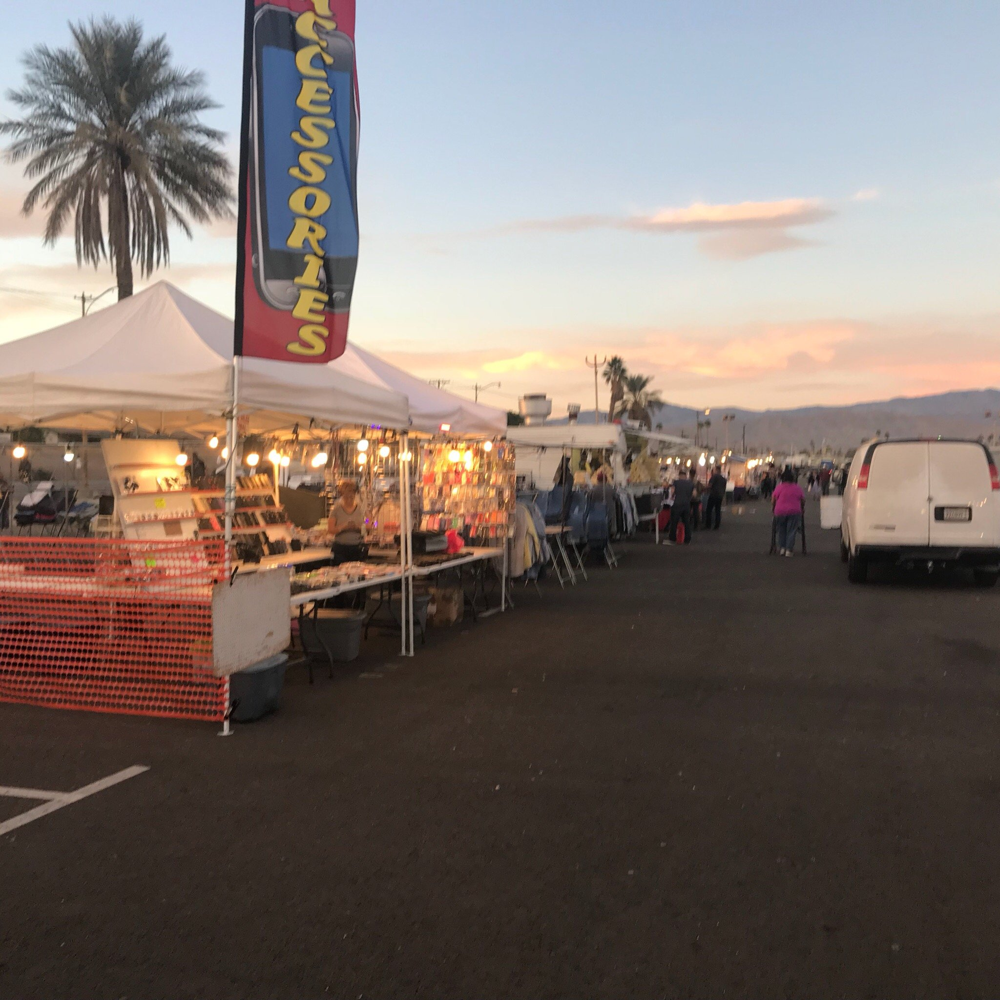

Josue Puente
My name is Josue Puente and I am a second year political science major. I have aspirations of giving back to my community in public services as well as being a teacher and giving back to the younger generations.
I was the mock trial captain for 2 years as well as the head attorney of the prosecution team for 3 years. Other leadership roles I had include being the treasure for my ASB class both in at the ASB and Grade class level. As well as being a water polo and swim captain for 2 years.
I am an exceptional public speaker from both being in mock trial and being the student representive for my High School at our district board meetings. I helped advocate for the students of not just our school but the entire community to help change the direction of our school into a better one for future generations.
Experience
Mock Trial Captian
• Helped train incoming members and ran team meetings
• Worked with coaches and members to devleop plans
• Made team bonding sessions to build rapport
• Taught material to other attorneys
Education
UC Riverside
Portfolio
 

